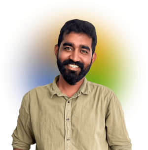
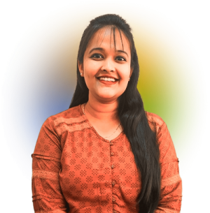
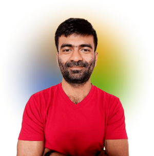

Meet our Fellows
2023
Vikram Sairam
MA (Public Policy), King's College London
Dr. Sunil Pradhan
PhD, School of International Studies, JNU

Jehosh Paul
LLM (Law and Development), Azim Premji University
Prithvi
MA Politics (International Studies), JNU
Prateek
BA LLB (Hons.), Gujarat National Law University
Aishwarya Khosla
MA (English and Cultural Studies), Panjab University
Mohammed Habeebullah
Master of Public Policy, Kautilya School of Public Policy

Thomas Karthik Varghese
MA (Economics), Madras School of Economics

Tanuvi Riti Thakur
MA (Economics), Cotton University
Harshita Vaddadi
MSc (Behavioural Economics), University of Essex

Sanskriti
BA Philosophy (Hons.), Miranda House, University of Delhi
Mohammad Juned Shahil
Master of Public Policy, Kautilya School of Public Policy
Suvidhi
MA (Diplomacy, Law & Business), O.P. Jindal Global University
Hirak J Sharma
MA Social Work (Community Organisation and Development Practice), Tata Institute of Social Sciences
Nisarg Shah
BE (Manufacturing Engineering), Gujarat Technological University
Anandita Pathak
BA History (Hons.), University of Delhi
Varun Desai
ADMA (Advertising & Marketing Communications), Xavier Institute of Communications

Ritesh
BS Economics, IIT Kanpur
Swati Bisen
LLM (International Law), Fletcher School of Law and Diplomacy
Aastha Rathore
PGD (English Journalism), IIMC, New Delhi